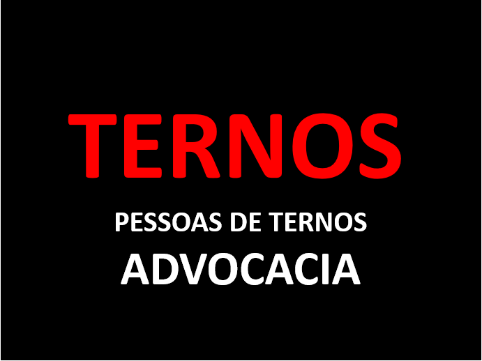
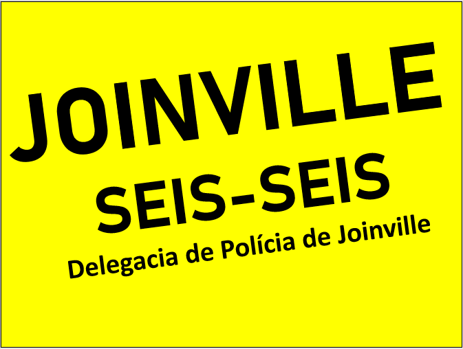

Localizada no centro de joinville, o predío de advocacia já utiliza de nossos serviços a anos. Ofício que zela, entre tantos fatores, pela imagem que apresenta ao público, mantém contato contante em busca de deixar seu ambiente de trabalho sempre o mais apresentável e funcional quanto possível.
Ternos - Empresa de Advocacia
O Escritório - Empresa de Vendas de Papel
Localizada na região norte da cidade, a companhia de venda de papel, liderada pelo atual "melhor chefe do mundo" Gerente - geral Maicon Silva, tem sido nosso cliente mais fiel. Empresa essa que utiliza muito treinamentos para seus colaboradores, liderados pelo seu auxiliar do gerente-geral Daniel Souza, sempre se mantém funcionando com o que há de melhor no mercado.
Joinville 66º - Delegacia de Polícia de Joinville
Localizada na região sul, a delegacia se mantém sempre operante em razão dos cuidados de seu capitão com o ambiente de trabalho. Nos consultando diariamente, de forma preventiva, foge dos imprevistos negativos que possa acontecer em seu edifício e mantendo assim, a concentração no dever de proteger a cidade de Joinville, o que faz tão bem.
